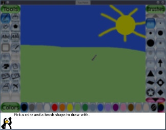
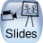

versión 0.9.26
Un sinxelo programa de debuxo para cativos
Copyright © 2002-2021 por varios colaboradores; vexa AUTHORS (AUTORES).
http://www.tuxpaint.org/
20 Febreiro 2021
Copyright © 2002-2021 por varios colaboradores; vexa AUTHORS (AUTORES).
http://www.tuxpaint.org/
20 Febreiro 2021
| Índice |
|---|
Que é «Tux Paint»?
Tux Paint é un programa de debuxo libre e de balde deseñado para cativos (3 ou máis anos). Ten unha interface sinxela e doada de usar, divertidos efectos de son e unha mascota de debuxos animados que axuda a guiar aos nenos mentres usan o programa. Ofrece un lenzo en branco e unha ampla variedade de ferramentas de debuxo para axudar ao seu cativo a ser creativo.
Licenza:
Tux Paint é un proxecto de código aberto, software libre publicado baixo a licenza pública xeral GNU (GPL). É de balde e o «código fonte» detrás do programa está dispoñíbel. (Isto permite a outras persoas engadir funcións, corrixir erros e usar partes do programa no seu propio software GPL).
Consulte o texto completo da licenza GPL en COPYING.txt.
Obxectivos:
- Doado e divertido
- Tux Paint pretende ser un sinxelo programa de debuxo para nenos pequenos. Non está pensado como unha ferramenta de debuxo de uso xeral. Preténdese que sexa divertido e doado de usar. Os efectos de son e un personaxe de debuxos animados permiten que o usuario saiba o que está pasando e o mantén entretido. Tamén hai formas de punteiro de rato estilo debuxo animado de gran tamaño.
- Ampliabilidade
- Tux Paint é ampliábel. Os pinceis e as formas do «selo de caucho» arrastrarse e soltarse. Por exemplo, un profesor pode soltar unha colección de formas de animais e pedirlles aos seus alumnos que debuxen un ecosistema. Cada forma pode ter un son que se reproduce e datos textuais que se amosan cando o cativo selecciona a forma.
- Portabilidade
- Tux Paint é portátil entre varias plataformas informáticas: Windows, Macintosh, Linux, etc. A interface ten o mesmo aspecto en todas. Tux Paint funciona adecuadamente en sistemas antigos e pódese construír para funcionar mellor en sistemas lentos.
- Simplicidade
- Non hai acceso directo ás complexidades subxacentes do computador. A imaxe actual consérvase cando se pecha o programa e volve aparecer cando se reinicia. Para gardar imaxes non é necesario crear nomes de ficheiro nin usar o teclado. A apertura dunha imaxe faise seleccionándoa nunha colección de miniaturas. O acceso a outros ficheiros da computadora está restrinxido.
Inicio de Tux Paint
Usuarios de Linux/Unix
Tux Paint debería ter colocado unha icona iniciadora nos seus menús KDE e/ou GNOME, en «Gráficos».
Como alternativa, pode executar a seguinte orde nun indicador do sistema (e dicir, «
$»):$ tuxpaintSe se producen erros, amosaranse no terminal (en
STDERR).
Usuarios de Windows
Tux PaintSe instalou Tux Paint no seu computador usando o «Instalador de Tux Paint», teralle preguntado se quería un atallo no menú «Inicio» e/ou un atallo de escritorio. Se aceptou, pode executar Tux Paint dende a sección «Tux Paint» do menú «Inicio» (p. ex.: en «Todos os programas») ou premendo dúas veces na icona «Tux Paint» do seu escritorio. se fixo que o instalador colocara un alí.
Se está a usar a versión «portátil» (ficheiro ZIP) de Tux Paint ou se usou o «Instalador de Tux Paint», pero escolleu non ter instalados atallos, terá que facer dobre clic na icona «
tuxpaint.exe» no cartafol «Tux Paint» do seu computador.De xeito predeterminado, o «Instalador de Tux Paint» colocará o cartafol de Tux Paint en «
C:\Program Files\», aínda que é posíbel que o teña cambiado vostede cando executou o instalador.Se usou a descarga de «ficheiro ZIP», o cartafol de Tux Paint estará onde teña extraído o contido do ficheiro ZIP.
Usuarios de macOS
Simplemente fai dobre clic na icona «
Tux Paint».
Pantalla de título
Cando se cargue por primeira vez Tux Paint, aparecerá unha pantalla de título/recoñecementos.
![[Pantalla de título]](../../html/images/tuxpaint-title.jpg)
Unha vez completada a carga, prema unha tecla, faga clic ou toque na xanela de Tux Paint para continuar. (Ou, após aproximadamente 5 segundos, a pantalla do título desaparecerá automaticamente.)
Pantalla principal
A pantalla principal divídese nas seguintes seccións:
- Lado esquerdo: Barra de Ferramentas
A barra de ferramentas contén os controis de debuxo e edición.
![[Ferramentas: Pintar, Selo, Liñas, Formas, Texto, Maxia, Etiqueta, Desfacer, Refacer, Borrador, Novo, Abrir, Gardar, Imprimir, Saír]](../../html/images/tools.jpg)
- Medio: Lenzo de debuxo
A parte máis grande da pantalla, no centro, é o lenzo de debuxo. Aquí é, obviamente, onde debuxas.
![[Lenzo]](../../html/images/canvas.jpg)
Nota: O tamaño do lenzo de debuxo depende do tamaño de Tux Paint. Pode cambiar o tamaño de Tux Paint empregando a ferramenta de configuración Tux Paint Config. ou por outros medios. Consulte a documentación das Opcións para obter máis detalles.
- Lado dereito: Selector
Dependendo da ferramenta actual, o selector amosa cousas diferentes. p. ex.: cando se selecciona a ferramenta Pincel ou Liña, amosa os distintos pinceis dispoñíbeis. Cando se selecciona a ferramenta Selo de caucho, amosa as diferentes formas que pode usar. Cando se selecciona a ferramenta Texto ou Etiqueta, amosa varios tipos de letra.
![[Selectores: pinceis, letras, formas, selos]](../../html/images/selector.jpg)
- Máis abaixo: Cores
Amosarase unha paleta de cores dispoñíbeis preto da parte inferior da pantalla.
![[Cores: negro, branco, vermello, rosa, laranxa, amarelo, verde, cian, azul, roxo, marrón, gris]](../../html/images/colors.jpg)
No extremo dereito hai dúas opcións especiais de cor, o «selector de cores», que ten o contorno dun contagotas e que permite recoller unha cor que se atopa dentro do debuxo e a paleta do arco da vella, que lle permite recoller unha cor dede dentro dunha caixa que contén milleiros de cores.
(Nota: Pode definir as súas propias cores para Tux Paint. Consulte a documentación de «Opcións»).
- Abaixo de todo: Área de axuda
Na parte inferior da pantalla, Tux, o pingüín de Linux, ofrece consellos e outra información mentres usa Tux Paint.

Ferramentas dispoñíbeis
Ferramentas de debuxo
- Ferramenta «Pintar» (pinceis)

A ferramenta Pincel permítelle debuxar a man alzada usando varios pinceis (escollidos no Selector da dereita) e cores (escollidos na Paleta de cores cara á parte inferior).
Se mantén premido o botón do rato e move o rato, irá debuxando a medida que se move.
Mentres debuxa, soa un son. Canto maior sexa o pincel, menor será o ton.

- Ferramenta «Selo» (selos de caucho)
A ferramenta Selo é como un conxunto de selos de cacho ou adhesivos. Permítelle pegar imaxes fotográficas ou debuxadas previamente (como a imaxe dun cabalo, unha árbore ou a lúa) na súa imaxe.
Ao mover o rato arredor do lenzo, un contorno segue o rato, amosando onde se colocará o selo e o grande que será. Prema para colocar o selo.

Pode haber numerosas categorías de selos (por exemplo, animais, plantas, espazo exterior, vehículos, persoas, etc.). Use as frechas esquerda e dereita preto da parte inferior do selector para percorrer as coleccións.
Antes de «estampar» unha imaxe no seu debuxo, ás veces pódense aplicar varios efectos (dependendo do selo):
- Algúns selos pódense colorer ou matizar. Se a paleta de cores debaixo do lenzo está activada, pode premer nas cores para cambiar o ton ou a cor do selo antes de colocalo na imaxe.
- Os selos poden reducirse e expandirse premendo dentro da serie de barras de forma triangular na parte inferior dereita; canto maior sexa a barra, máis grande aparecerá o selo na súa imaxe.
- Moitos selos poden virarse verticalmente ou amosarse como unha imaxe espello, usando os botóns de control na parte inferior dereita.

Diferentes selos poden ter diferentes efectos sonoros e/ou sons descritivos (falados). Os botóns da área de axuda na parte inferior esquerda (preto de Tux, o pingüín de Linux) permiten reproducir de novo os efectos de son e os sons descritivos para o selo seleccionado nese momento.
(Nota: se está estabelecida a opción «
nostampcontrols», Tux Paint non amosará os controis Reflectir, Virar, Encoller e Aumentar para os selos. Consulte a documentación de «Opcións ).
- Ferramenta «Liñas»

Esta ferramenta permítelle debuxar liñas rectas empregando os diversos pinceis e cores que normalmente emprega co pincel.
Prema co rato e manteña o botón premido para escoller o punto de inicio da liña. Ao mover o rato, unha delgada liña |elástica» amosará onde se trazará a liña.
Solte o rato para completar a liña. Soará un «chimpo».

- Ferramenta «Formas»

Esta ferramenta permítelle debuxar algunhas formas sinxelas enchidas e sen encher.
Seleccione unha forma do selector da dereita (círculo, cadrado, óvalo, etc.).
Use as opcións da parte inferior dereita para escoller o comportamento da ferramenta de forma:
- Formas dende o centro
- A forma expandirase dende onde fixera clic inicialmente e centrarase arredor desa posición. (Este foi o único comportamento de Tux Paint ata a versión 0.9.24.)
- Formas dende cantos
- A forma estenderase cun canto a partir de onde fixera clic inicialmente. Este é o método predeterminado da maioría dos outros programas tradicionais de debuxo. (Esta opción engadiuse a partir da versión 0.9.25 de Tux Paint.)
Nota: Se os controis de forma están desactivados (p. ex.: coa opción «
noshapecontrols»), non se presentarán os controis e empregarase o método «formas dende o centro».No lenzo, fprema co rato e manteña o botón premido para estirar a forma dende onde fixo clic. Algunhas formas poden cambiar a proporción (por exemplo, o rectángulo e o óvalo poden ser máis largos que altos ou máis altos que largos), outros non (por exemplo, cadrados e círculos).
Solte o rato cando remate de estirar.
- Modo de formas normais
Agora pode mover o rato arredor do lenzo para xirar a forma.
Prema de novo no botón do rato e a forma debuxarase na cor actual.
- Modo de formas simples
- Se están activadas as formas simples (p. ex.: coa opción «
simpleshapes»), a forma debuxarase no lenzo cando solte o botón do rato. (Non hai ningún paso de rotación.)

- Ferramentas «Texto» e «Etiquetas»
Escolla un tipo de letra (entre as «Letras» dispoñíbeis á dereita) e unha cor (na paleta de cores preto da parte inferior). prema na pantalla e aparecerá un cursor. Escriba un texto e aparecerá na pantalla.
Prema
[Enter]ou[Return]e o texto será debuxado na imaxe e o cursor moverase cara abaixo unha liña.Como alternativa, prema
[Tab]e o texto será debuxado na imaxe, mais o cursor moverase á dereita do texto, no canto de baixar unha liña e á esquerda. (Isto pode ser útil para crear unha liña de texto con cores, tipos de letra, estilos e tamaños mesturados.)Ao premer noutro lugar da imaxe mentres a entrada de texto aínda está activa, a liña de texto actual moverase a esa posición (onde pode continuar editándoa).

- Comparación de «Texto» con «Etiqueta»
A ferramenta Texto é a ferramenta de entrada de texto orixinal en Tux Paint. O texto introducido usando esta ferramenta non se pode modificar nin mover máis tarde, xa que pasa a formar parte do debuxo. Non obstante, por mor de que o texto pasa a formar parte da imaxe, pódese debuxar ou modificar empregando os efectos da ferramenta Maxia (p. ex.: luxado, tinguido, realce, etc.)
Ao usar a ferramenta Etiqueta (que foi engadida a Tux Paint na versión 0.9.22), o texto «flota» sobre a imaxe e os detalles da etiqueta (o texto, a posición da etiqueta , a opción de letra e a cor) almacénanse por separado. Isto permite recolocar ou editar a etiqueta máis adiante.
A ferramenta Etiqueta pódese desactivar (p. ex.: seleccionando «Desactivar a ferramenta "Etiqueta"» en Tux Paint Config. ou executando Tux Paint coa opción «
nolabel»).- Introdución de caracteres internacionais
Tux Paint permite introducir caracteres en diferentes idiomas. A maioría dos caracteres latinos (A-Z, ñ, è, etc.) poden introducirse directamente. Algúns idiomas requiren que Tux Paint pase a un modo de entrada alternativo antes de introducilos e algúns caracteres deben compoñerse premendo varias teclas.
Cando a configuración local de Tux Paint está estabelecida nun dos idiomas que fornecen modos de entrada alternativos, úsase unha tecla para pasar do modo normal (caracteres latinos) ao modo ou modos específicos da configuración local.
A continuación amósanse as configuracións locais compatíbeis actualmente, os métodos de entrada dispoñíbeis e a tecla para cambiar ou alternar su modos. Nota: Moitos tipos de letra non inclúen todos os caracteres de todos os idiomas, polo que ás veces ters que cambiar os tipos de letra para ver os caracteres que tenta escribir.
- Xaponés — Hiragana romanizado e Katakana romanizado — tecla
[Alt]da dereita- Coreano — Hangul 2-Bul — tecla
[Alt]da dereita or tecla[Alt]da esquerda- Chinés tradicional — tecla
[Alt]da dereita ou tecla[Alt]da esquerda- Tailandés — tecla
[Alt]da dereita- Teclado en pantalla
Está dispoñíbel un teclado opcional en pantalla para as ferramentas de texto e etiqueta, que pode fornecer unha ampla variedade de deseños e composición de caracteres (p. ex.: compoñer «a» e «e» en «æ»). Consulte a documentación de «Opcións» e a de «Ampliar Tux Paint» para obter máis información.
- Ferramenta «Encher»
The 'Fill' tool 'flood-fills' a contiguous area of your drawing with a color of your choice. Three fill options are offered:
- Solid — click once to fill an area with a solid color.
- Linear — click and then drag to fill the area with color that fades away (a gradient) towards where you drag the mouse.
- Radial — click once to fill an area with a color that fades away (a gradient) radially, centered on where you clicked.
Nota: Antes do Tux Paint 0.9.24, esta era unha ferramenta Máxica (ver máis abaixo). Note: Prior to Tux Paint 0.9.26, this tool only offered the 'Solid' method of filling.
- Ferramenta «Maxia» (efectos especiais)

A ferramenta Maxia é realmente un conxunto de ferramentas especiais. Seleccione un dos efectos «máxicos» no selector da dereita. Após, dependendo da ferramenta, pode premer e arrastrar arredor da imaxe e/ou simplemente premer na imaxe unha vez para aplicar o efecto.
Se a ferramenta pode usarse premendo e arrastrando, estará dispoñíbel un botón de «pintura» á esquerda, debaixo da lista de ferramentas Maxia na parte dereita da pantalla. Se a ferramenta pode afectar toda a imaxe á vez, haberá un botón «imaxe completa» á dereita.
Consulte as instrucións de cada ferramenta Máxica (no cartafol «magic-docs»).
- Ferramenta de «Goma» (de borrar)

Esta ferramenta é similar ao pincel. Onde queira que prema (ou prema e arrastre), a imaxe borrarase. (Pode ser branco, doutra cor ou a unha imaxe de fondo, dependendo da imaxe.)
Hai varios tamaños de goma dispoñíbeis, tanto redondos como cadrados.
Ao mover o rato, un contorno cadrado segue o punteiro, amosando que parte da imaxe se borrará a branco.
Ao borralo, reprodúcese un son de borrado «rechiante».
Outros controis
- Orde «Desfacer»

Ao premer nesta ferramenta desfarase a última acción de debuxo. Vostede pode incluso desfacer máis dunha vez.
Nota: Tamén pode premer
[Control]+[Z]no teclado para desfacer.
- Orde «refacer»

Ao premer nesta ferramenta refarase a acción de debuxo que ven de facer co botón «Desfacer».
Mentres non volva debuxar, pode refacer tantas veces como teña desfeito.
Nota: Tamén pode premer
[Control]+[R]no teclado para refacer.
- Orde «Novo»

Ao premer no botón «Novo» iniciarase un novo debuxo. Aparecerá un diálogo no que pode escoller comezar unha nova imaxe cunha cor de fondo sólida ou usando unha imaxe «de Inicio» ou «modelo» (ver máis abaixo). Primeiro preguntaráselle se realmente quere facelo.
Nota: Tamén pode premer
Imaxes «de comezo» e de «modelo»[Control]+[N]no teclado para iniciar un novo debuxo.As «imaxes de inicio» poden comportarse como unha páxina dun libro para colorar: un contorno en branco e negro dunha imaxe, que logo pode colorar e o contorno negro permanecerá intacto, ou como unha fotografía en 3D, onde debuxa entre primeiro plano e a capa de fondo.
Os «modelos» son similares, pero simplemente fornecen un debuxo de fondo para poder traballar. A diferenza das «imaxes de inicio», non hai ningunha capa que permaneza no primeiro plano de nada que debuxe na imaxe.
Cando se usa a ferramenta «Borrador», reaparecerá a imaxe orixinal da «imaxe de inicio» ou do «modelo». As ferramentas máxicas «Inverter» e «Espello» tamén afectan á orientación da «imaxe de inicio» ou do «modelo».
Cando carga unha «imaxe de inicio» ou un «modelo», debuxa nel(a) e logo preme en «Gardar», crea un novo ficheiro de imaxe; non sobrescribe o orixinal, polo que pode usalo de novo máis adiante (accedendo a el dende o diálogo «Novo»).
- Orde «Abrir»

Isto amosa unha lista de todas as imaxes que gardou. Se hai máis do que pode caber na pantalla, use as frechas arriba e abaixo na parte superior e inferior da lista para desprazarse pola lista de imaxes.

Prema nunha imaxe para seleccionala e logo...

Prema no botón verde «Abrir» na parte inferior esquerda da lista para cargar a imaxe seleccionada.
(Como alternativa, pode facer dobre clic na icona dunha imaxe para cargala.)

Prema no botón marrón «Borrar» (cesta do lixo) na parte inferior dereita da lista para borrar a imaxe seleccionada. (Pediráselle que o confirme).
Nota: A partir da versión 0.9.22, a imaxe colocarase no cesto do lixo do seu escritorio, só en Linux.
Prema no botón «Exportar» preto da parte inferior dereita para exportar a imaxe ao cartafol de exportación. (p. ex.: «
~/Pictures/TuxPaint/»)
- 
Prema no botón azul «Diapositivas» (proxector de diapositivas) situado na parte inferior esquerda para ir ao modo de presentación de diapositivas. Vexa «Diapositivas», a continuación, para máis detalles.

Prema no botón de frecha vermello «Atrás» situado na parte inferior dereita da lista para cancelar e volver á imaxe que debuxaba.
If choose to open a picture, and your current drawing hasn't been saved, you will be prompted as to whether you want to save it or not. (See "Save," below.)
Nota: Tamén pode premer
[Control]+[O]no teclado para activar o diálogo «Abrir».
- Orde «Gardar»

Isto garda a súa imaxe actual.
If you haven't saved it before, it will create a new entry in the list of saved images. (i.e., it will create a new file)
Note: It won't ask you anything (e.g., for a filename). It will simply save the picture, and play a "camera shutter" sound effect.
If you have saved the picture before, or this is a picture you just loaded using the "Open" command, you will first be asked whether you want to save over the old version, or create a new entry (a new file).

Note: If either the "
saveover" or "saveovernew" options are set, it won't ask before saving over. See the "Options" documentation.Nota: Tamén pode premer
[Control]+[S]no teclado para gardar.
- Orde «Imprimir»
Prema neste botón e imprimirase a súa imaxe.
On most platforms, you can also hold the
[Alt]key (called[Opción]on Macs) while clicking the 'Print' button to get a printer dialog. Note that this may not work if you're running Tux Paint in fullscreen mode. See below.
- Desactivar a impresión
Pódese estabelecer a opción «
noprint», que desactivará o botón «Imprimir» de Tux Paint.Vexa a documentación de «Opcións.
- Restrición da impresión
The "
printdelay" option can be set, which will only allow occasional printing — once every so many seconds, as configured by you.For example, with "
printdelay=60" in Tux Paint's configuration file, printing can only occur once per minute (60 seconds).Vexa a documentación de «Opcións.
- Ordes de impresión
(Só Linux e Unix)
Tux Paint imprime creando unha representación PostScript da imaxe e envíaa a un programa externo. De xeito predeterminado, o programa é:
lprThis command can be changed by setting a "
printcommand" option in Tux Paint's configuration file.An alternative print command can be invoked by holding the "
[Alt]" key on the keyboard while clicking clicking the 'Print' button, as long as you're not in fullscreen mode, an alternative program is run. By default, the program is KDE's graphical print dialog:kprinterThis command can be changed by setting a "
altprintcommand" option in Tux Paint's configuration file.Vexa a documentación de «Opcións.
- Axustes de impresión
(Windows e macOS)
By default, Tux Paint simply prints to the default printer with default settings when the 'Print' button is pushed.
However, if you hold the
[Alt](or[Opción]) key on the keyboard while clicking the 'Print' button, as long as you're not in fullscreen mode, your operating system's printer dialog will appear, where you can change the settings.You can have the printer configuration changes stored between Tux Paint sessions by setting the "
printcfg" option.If the "
printcfg" option is used, printer settings will be loaded from the file "printcfg.cfg" in your personal folder (see below). Any changes will be saved there as well.Vexa a documentación de «Opcións.
- Dialogo de opcións da impresora
De xeito predeterminado, Tux Paint só amosa o diálogo da impresora (ou, en Linux/Unix, executa «
altprintcommand»; p. ex.: «kprinter» no canto de «lpr») se se mantén premida a tecla[Alt](ou[Opción]) ao premer no botón «Imprimir».However, this behavior can be changed. You can have the printer dialog always appear by using "
--altprintalways" on the command-line, or "altprint=always" in Tux Paint's configuration file. Conversely, you can prevent the[Alt]/[Opción]key from having any effect by using "--altprintnever", or "altprint=never".Vexa a documentación de «Opcións.
- Orde «Diapositivas» (en «Abrir»)
The 'Slides' button is available in the 'Open' dialog. It can be used to play a simple animation within Tux Paint, or a slideshow of pictures. It can also export an animated GIF based on the chosen images.
- Escolla de imaxes
When you enter the 'Slides' section of Tux Paint, it displays a list of your saved files, just like the 'Open' dialog.
Click each of the images you wish to display in a slideshow-style presentation, one by one. A digit will appear over each image, letting you know in which order they will be displayed.
You can click a selected image to unselect it (take it out of your slideshow). Click it again if you wish to add it to the end of the list.
- Estabelecer a velocidade de reprodución
A sliding scale at the lower left of the screen (next to the 'Play' button) can be used to adjust the speed of the slideshow or animated GIF, from slowest to fastest. Choose the leftmost setting to disable automatic advancement during playback within Tux Paint — you will need to press a key or click to go to the next slide (see below).
Note: The slowest setting does not automatically advance through the slides. Use it for when you want to step through them manually. (This does not apply to an exported animated GIF.)
- Reprodución en Tux Paint
To play a slideshow within Tux Paint, click the 'Play' button. (Note: If you hadn't selected ANY images, then ALL of your saved images will be played in the slideshow!)
During the slideshow, press
[Espazo],[Intro]or[Retorno], or the[Frecha cara á dereita]— or click the 'Next' button at the lower left — to manually advance to the next slide. Press[Frecha cara arriba]to go back to the previous slide.Press
[Escape], or click the 'Back' button at the lower right, to exit the slideshow and return to the slideshow image selection screen.- Exportando un GIF animado
Click the 'GIF Export' button near the lower right to have Tux Paint generate an animated GIF file based on the selected images.
Note: At least two images must be selected. (To export a single image, use the 'Export' option from the main 'Open' dialog.) If no images are selected, Tux Paint will NOT attempt to generate a GIF based on all saved images.
Pressing
[Escape]during the export process will abort the process, and return you to the 'Slideshow' dialog.
Click 'Back' in the slideshow image selection screen to return to the 'Open' dialog.
- Orde «Saír»

Clicking the 'Quit' button, closing the Tux Paint window, or pushing the
[Escape]key will quit Tux Paint.Primeiro preguntaráselle se realmente quere saír.
If you choose to quit, and you haven't saved the current picture, you will first be asked if wish to save it. If it's not a new image, you will then be asked if you want to save over the old version, or create a new entry. (See "Save" above.)
Note: If the image is saved, it will be reloaded automatically the next time you run Tux Paint -- unless the "
startblank" option is set.Note: The 'Quit' button within Tux Paint, and quitting via the
[Escape]key, may be disabled, via the "noquit" option.In that case, the "window close" button on Tux Paint's title bar (if not in fullscreen mode) or the
[Alt]+[F4]key sequence may be used to quit.If neither of those are possible, the key sequence of
[Maiúsculas]+[Control]+[Escape]may be used to quit.Vexa a documentación de «Opcións.
- Silenciar o son
There is no on-screen control button at this time, but by using the
[Alt]+[S]keyboard sequence, sound effects can be disabled and re-enabled (muted and unmuted) while the program is running.Note that if sounds are completely disabled via the "
nosound" option, the[Alt]+[S]key combination has no effect. (i.e., it cannot be used to turn on sounds when the parent/teacher wants them disabled.)
Tux Paint's 'Open' dialog only displays pictures you created with Tux Paint. So what do you do if you want to load some other drawinng or even a photograph into Tux Paint, so you can edit or draw on it?
Pode simplemente converter a imaxe ao formato que usa Tux Paint –PNG (Portable Network Graphics – Gráficos de Rede Portátiles)– e colocala no directorio/cartafol «
saved» de Tux Paint. Aquí é onde se atopa (de xeito predeterminado:
- Windows 10, 8, 7, Vista
- Dentro do cartafol «
AppData» do usuario, p. : «C:\Users\nome de usuario\AppData\Roaming\TuxPaint\saved\».- Windows 2000, XP
- Dentro do cartafol «
Application Data» do usuario, p. : «C:\Documents and Settings\nome de usuario\Application Data\TuxPaint\saved\».- macOS
- Dentro do cartafol «
Library» do usuario, p. : «/Users/nome de usuario/Library/Application Support/Tux Paint/saved/».- Linux/Unix
- Dentro dun directorio agochado «
.tuxpaint», no seu directorio persoal («$HOME»), p. ex.: «/home/nome de usuario/.tuxpaint/saved/».Note: It is also from this folder that you can copy or open pictures drawn in Tux Paint using other applications, though the 'Export' option from Tux Paint's 'Open' dialog can be used to copy them to a location that's easier and safer to access.
Uso do script de importación, «
tuxpaint-import»Linux and Unix users can use the "
tuxpaint-import" shell script which gets installed when you install Tux Paint. It uses some NetPBM tools to convert the image ("anytopnm"), resize it so that it will fit in Tux Paint's canvas ("pnmscale"), and convert it to a PNG ("pnmtopng").It also uses the "
date" command to get the current time and date, which is the file-naming convention Tux Paint uses for saved files. (Remember, you are never asked for a 'filename' when you go to save or open pictures!)To use this script, simply run it from a command-line prompt, and provide it the name(s) of the file(s) you wish to convert.
They will be converted and placed in your Tux Paint "
saved" directory. (Note: If you're doing this for a different user (e.g., your child) you'll need to make sure to run the command under their account.)Exemplo:
$ tuxpaint-import avoa.jpg
avoa.jpg -> /home/username/.tuxpaint/saved/20210303223927.png
jpegtopnm: WRITING A PPM FILEThe first line ("
tuxpaint-import avoa.jpg") is the command to run. The following two lines are output from the program while it's working.Now you can load Tux Paint, and a version of that original picture will be available under the 'Open' dialog. Just double-click its icon!
Importar imaxes manualmente
Windows, macOS, and Haiku users who wish to import arbitrary images into Tux Paint must do so via a manual process.
Load a graphics program that is capable of both loading your picture and saving a PNG format file. (See the documentation file "PNG.html" for a list of suggested software, and other references.)
When Tux Paint loads an image that's not the same size as its drawing canvas, it scales (and sometimes smears the edges of) the image so that it fits within the canvas.
To avoid having the image stretched or smeared, you can resize it to Tux Paint's canvas size. This size depends on the size of the Tux Paint window, or resolution at which Tux Paint is run, if in fullscreen. (Note: The default resolution is 800x600.) See "Cálculo das dimensións da imaxe", below.
Save the picture in PNG format. It is highly recommended that you name the filename using the current date and time, since that's the convention Tux Paint uses:
AAAAMMDDhhmmss.png
AAAA= AnoMM= Mes (dous díxitos, «01»-«12»)DD= Día do mes (dous díxitos, «01»-«31»)HH= Hora (dous díxitos, en formato 24 horas, «00»-«23»)mm= Minuto (dous díxitos, «00»-«59»)ss= Segundo (dous díxitos, «00»-«59»)Exemplo: «
20210303223927.png», para 3 Marzo 2021 en 22:39:27.Coloque este ficheiro PNG no seu directorio/cartafol «
saved» de Tux Paint. (Ver arriba.)Cálculo das dimensións da imaxe
This part of the documentation needs to be rewritten, since the new "
buttonsize" option was added. For now, try drawing and saving an image within Tux Paint, then determine what size (pixel width and height) it came out to, and try to match that when scaling the picture(s) you're importing into Tux Paint.
Other documentation included with Tux Paint (found in the "docs" folder/directory) includes:
- Documentación da ferramenta «Maxia» («
magic-docs»)
Documentación para cada unha das ferramentas de «Maxia» instaladas actualmente.- AUTHORS.txt
Lista de autores e colaboradores.- CHANGES.txt
Resumo do que cambiou entre as versións de Tux Paint.- COPYING.txt
Tux Paint's software license, the GNU General Public License (GPL)- INSTALL.html
Instrucións para compilar e instalar Tux Paint, cando proceda.- EXTENDING.html
Detailed instructions on extending Tux Paint: creating brushes, stamps, starters, and templates; adding fonts; and creating new on-screen keyboard layouts and input methods.- OPTIONS.html
Detailed instructions on command-line and configuration-file options, for those who don't want to use the Tux Paint Config. tool to manage Tux Paint's configuration.- PNG.html
Notes on creating PNG format bitmapped (raster) images for use in Tux Paint.- SVG.html
Notas sobre a creación de imaxes vectoriais en formato SVG para usar en Tux Paint.- SIGNALS.html
Información sobre os sinais POSIX aos que responde Tux Paint.
If you need help, there are numerous ways to interact with Tux Paint developers and other users.
- Report bugs or request new features via the project's bug-tracking system
- Participe nas distintas listas de correo do proxecto
- Converse con desenvolvedores e outros usuarios a través de IRC
- Ou póñase en contacto directamente cos desenvolvedores
To learn more, visit the "Contacto" page of the official Tux Paint website: http://tuxpaint.org/contact/
Tux Paint is a volunteer-driven project, and we're happy to accept your help in a variety of ways.
- Traducir Tux Paint a outro idioma
- Mellorar as traducións existentes
- Crear ilustracións (selos, imaxes de inicio, modelos, pinceis)
- Engadir ou mellorar funcións ou ferramentas máxicas
- Crear un currículo na aula
- Promover ou axudar a outras persoas a usar Tux Paint
To learn more, visit the "Colabora connosco" page of the official Tux Paint website: http://tuxpaint.org/help/